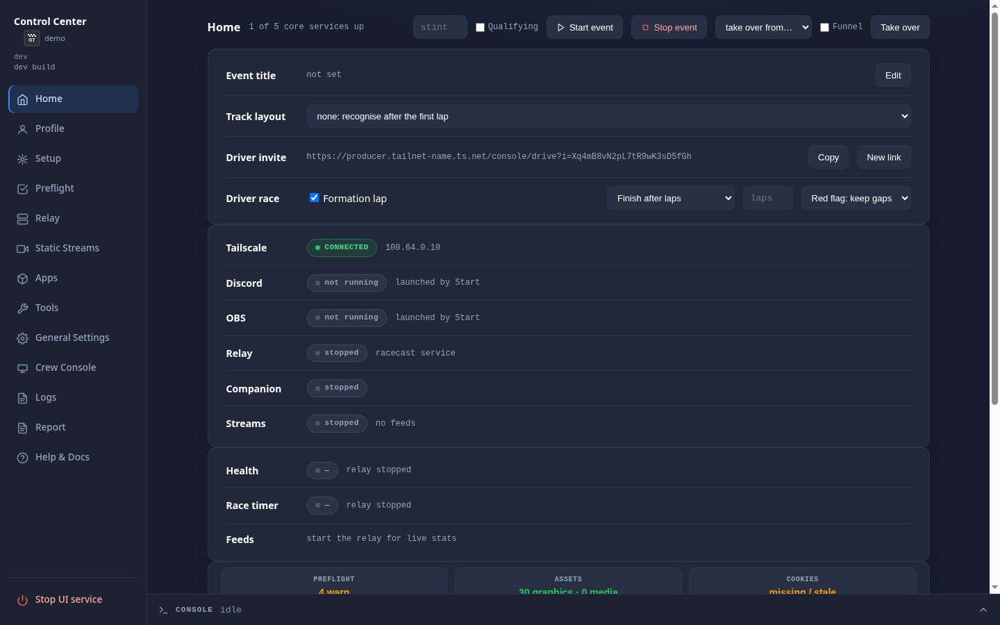
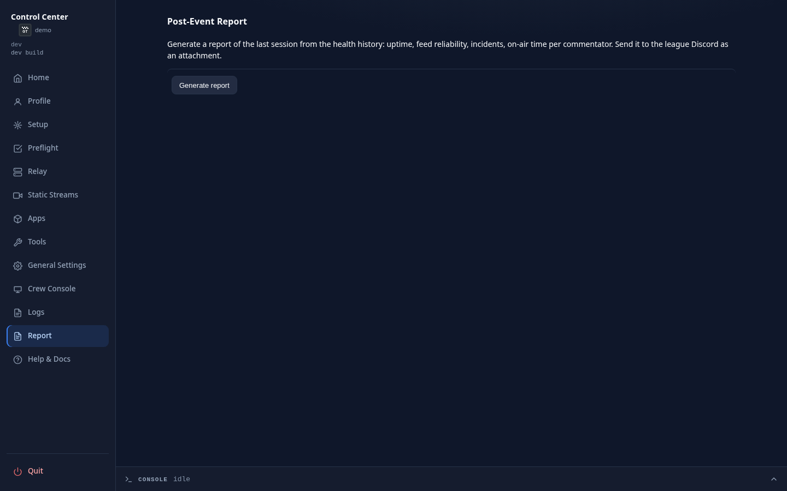

<!doctype html>
<html lang="en">
<head>
<meta charset="utf-8">
<meta name="viewport" content="width=device-width, initial-scale=1">
<link rel="icon" href="favicon.svg" type="image/svg+xml">
<link rel="apple-touch-icon" href="apple-touch-icon.png">
<title>Producer (event day) — Onboarding · GT Racing Broadcast</title>
<link rel="stylesheet" href="vendor/reveal/dist/reveal.css">
<link rel="stylesheet" href="vendor/reveal/plugin/highlight/monokai.css">
<link rel="stylesheet" href="assets/deck.css">
</head>
<body data-role="producer">
<div class="reveal"><div class="slides">

<section data-markdown><script type="text/template">
<span class="role-tag">Producer · Onboarding</span>
# Producer (event day)
You start and stop the show and keep the machine healthy.
The director runs everything in between.
[Who does what](https://github.com/jegr78/gt-racing-broadcast/wiki/Who-does-what)

Note: Welcome to the producer onboarding. As producer, your role is simple but vital. You start and stop the show, and you keep the technical machine healthy throughout. Everything in between. The actual broadcast. Is run by the director.
</script></section>

<section data-markdown><script type="text/template">
## Your job in one sentence
Bring the station up, watch the machine, bring it down.
- On 12h/24h events, only the **final-part** producer joins Discord voice for the interviews.
- Everything else during the race is the director's responsibility.

Note: Here is your job in one sentence: bring the station up, watch the machine, and bring it down. On long twelve and twenty-four hour events, only the producer of the final part joins the Discord voice channel for the interviews. Everything else during the race is the director's responsibility.
</script></section>

<section data-markdown><script type="text/template">
## The shape of an event


Note: This is the shape of an event from the producer's point of view. You handle the bring-up at the start and the shutdown at the end, while the director owns the long middle stretch where the race actually airs.
</script></section>

<section data-markdown><script type="text/template">
## One-click bring-up
Open the **Control Center**, confirm the **active league**, and press **Start event**. It launches Tailscale, Discord, relay, OBS and Companion in order.


[Run an event](https://github.com/jegr78/gt-racing-broadcast/wiki/Run-an-event) · [Control Center](https://github.com/jegr78/gt-racing-broadcast/wiki/Control-Center)

Note: Bringing everything up is essentially one click. Open the Control Center, confirm the active league is correct, and press Start event. It launches Tailscale, Discord, the relay, OBS and Companion, in the right order, for you.
</script></section>

<section data-markdown><script type="text/template">
## ~30 min before you go live (1/2)
Plan about 30 minutes for these steps, all from the Control Center:

1. Confirm the active league profile.
2. Apply any available tool update; then **reboot** the PC.
3. **Tools → Update all**: outdated tools are the #1 cause of feed failures.
4. **Assets → Cookies → Refresh** (log into YouTube in that browser first).
5. **Assets → Media / Graphics → Download** if they changed.
6. **Assets → Brands → Download** if the league's Brands tab changed.

[Run an event](https://github.com/jegr78/gt-racing-broadcast/wiki/Run-an-event#before-you-go-live)

Note: Plan about thirty minutes before you go live, all from the Control Center. Confirm the active league profile. Apply any available tool update, then reboot the PC. Run Tools, Update all. Outdated tools are the number one cause of feed failures. Refresh your cookies after logging into YouTube in that browser. Download the media and graphics again if they changed. And if the league keeps its own brand logos in the Brands tab of the Sheet, download them too when that tab changed. They show on the HUD and next to every entry in the timing.
</script></section>

<section data-markdown><script type="text/template">
## ~30 min before you go live (2/2)
7. Confirm OBS is on **your league's scene collection** (`GT Racing Endurance — <league>`).
8. **Preflight → Run**: fix anything it flags.
9. **Home → Start event**: confirm each feed shows up in OBS.
10. On **Home**, check that **Companion** is connected.
11. Enter the league's **stream key** in OBS (**Settings → Stream**).

[Run an event](https://github.com/jegr78/gt-racing-broadcast/wiki/Run-an-event#before-you-go-live)

Note: Then confirm OBS is on your league's scene collection. Run Preflight, and fix anything it flags. Press Start event on the Home view and confirm each feed shows up in OBS. Check on Home that Companion is connected, so the director can reach the buttons. Finally, enter the league's stream key in OBS, under Settings, Stream.
</script></section>

<section data-markdown><script type="text/template">
## Home: track layout and driver race
- **Track layout**: the event's GT7 layout for the telemetry. A layout marked "no line" has no racing line and shows a warning.
- **Driver race**: **Formation lap**, **Finish after laps** with the lap count or **Timed**, the **Red flag** restart rule and the **Lap time** seconds.



[Control Center: Home](https://github.com/jegr78/gt-racing-broadcast/wiki/Control-Center#home) · *CLI: `racecast event track`, `racecast event race`*

Note: When drivers send telemetry, the Home view holds the event settings for it, right under the event title. Track layout picks the event's GT seven layout. A layout marked no line has no downloaded racing line, and the row shows a warning. Driver race sets how the race order starts and finishes: a formation lap, a finish after a lap count or a timed finish, the league's red flag restart rule, and how many seconds a new lap time stays on the dashboard. The profile keeps these settings.
</script></section>

<section data-markdown><script type="text/template">
## Driver invite and public timing link
- **Start event** creates both links. **Stop event** ends them.
- **Driver invite**: the link drivers open to send their telemetry.
- **Public timing**: a page for viewers and team mates. No login, timing only, same delay as the on-air dashboard.
- **Copy** copies a link. **New link** replaces it and the old one stops working. A new invite means every driver registers again.
- People outside the tailnet reach both pages over the Funnel (`racecast funnel on`).

[Driver telemetry: Public live timing](https://github.com/jegr78/gt-racing-broadcast/wiki/Driver-Telemetry#public-live-timing)

Note: Start event also creates two links on the Home view, and Stop event ends them. The driver invite is the link drivers open to send their telemetry. The public timing link is a page for viewers and team mates. It needs no login, shows timing only, and runs with the same delay as the on-air dashboard. Copy copies a link. New link replaces it, the old link stops working, and after a new driver invite every driver registers again. People outside your tailnet reach both pages over the public Funnel, which racecast funnel on switches on.
</script></section>

<section data-markdown><script type="text/template">
## Hosted timing (optional)
If the league set up a Cloudflare timing host, the hosted page serves the viewers, so their number costs no upload.


- The Home row shows the link to hand out, the viewers on the host and an estimate of today's quota.
- **Serve Funnel** moves the viewers to the Funnel page; switching back to hosted brings them back.
- **Check** says when the host needs a **Deploy** after a racecast update.

[Driver telemetry: Hosted live timing](https://github.com/jegr78/gt-racing-broadcast/wiki/Driver-Telemetry#hosted-live-timing-optional)

Note: A league can hand the public timing page to a Cloudflare Worker. The relay then sends one update every two seconds, and Cloudflare serves every viewer, so the number of viewers costs no upload on your line. The Home row then shows the hosted link to hand out, the viewers on the host and an estimate of today's free quota. Serve Funnel moves the viewers to the Funnel page, and switching back to hosted brings them back. In the Profile view, Check says when the host code is out of date, and Deploy updates it. Do that after a racecast update.
</script></section>

<section data-markdown><script type="text/template">
## Go live
- In OBS, switch to the **Standby** scene, then click **Start Streaming**.
- From here the **director runs the show**. You just watch the machine.
- The director opens with **Intro**, then cuts into the race look.

You should see: OBS on Standby with **Stop Streaming** showing. Confirming the stream is running.

Note: To go live, switch OBS to the Standby scene, then click Start Streaming. From here the director runs the show. You just watch the machine. The director opens with the Intro and then cuts into the race look. You should see OBS on Standby with a Stop Streaming button showing, which confirms the stream is running.
</script></section>

<section data-markdown><script type="text/template">
## Who does what


At each driver change the director **arms** the incoming feed and hands over with **NEXT**.
The producer monitors the machine.
[Who does what](https://github.com/jegr78/gt-racing-broadcast/wiki/Who-does-what)

Note: Here is who does what during the race. At each driver change the director arms the incoming feed and hands over with NEXT. You, the producer, monitor the machine and step in only if something breaks.
</script></section>

<section data-markdown><script type="text/template">
## Producer handover (12h / 24h events)
Each part has its own producer + stream key; viewers follow the channel redirect.

On the incoming machine's Control Center **Home**, use **Take over**. Point it at producer A. It pulls A's on-air stint, chat and revocations and brings your station up there.

- **Standard:** over the public **Funnel** (no shared Tailscale account needed).
- **Alternative:** the same **tailnet** (A's `100.x` address).

*CLI: `racecast event takeover <A-host> --funnel` (or `<A-tailscale-ip>`).*

Then verify Feed A, start your OBS stream. The redirect carries viewers over.

[Run an event](https://github.com/jegr78/gt-racing-broadcast/wiki/Run-an-event) · [Remote access](https://github.com/jegr78/gt-racing-broadcast/wiki/Remote-access)

Note: On twelve and twenty-four hour events, each part has its own producer and stream key, and viewers follow the channel redirect between them. On the incoming machine's Control Center Home, use Take over and point it at the previous producer. It pulls their on-air stint, chat and revocations, and brings your station up at the same point. The standard route is over the public Funnel, which needs no shared Tailscale account; the alternative is the same tailnet. Then verify Feed A, start your OBS stream, and the redirect carries the viewers over.
</script></section>

<section data-markdown><script type="text/template">
## Interviews + Outro
- **Final-part producer only:** join the Discord **"Interviews"** voice channel personally, before race end. OBS captures audio from your local Discord.
- Stay muted until the director cuts to the Interview scene; joining early is harmless.
- When the director is done, they press **OUTRO**. The outro clip plays.
- After the on-air wrap-up you can **Stop Streaming** in OBS at any time.

[Run an event](https://github.com/jegr78/gt-racing-broadcast/wiki/Run-an-event)

Note: For the interviews and outro: only the final-part producer joins the Discord Interviews voice channel personally, before the race ends. OBS captures the audio from your local Discord. Stay muted until the director cuts to the Interview scene; joining early is harmless. When the director is done, they press Outro and the outro clip plays. After the on-air wrap-up, you can Stop Streaming in OBS at any time.
</script></section>

<section data-markdown><script type="text/template">
## The machine during a long event
- **Sleep**: while the relay runs it keeps the PC from sleeping when idle. Home shows "idle sleep blocked". `RACECAST_KEEP_AWAKE=0` in `.env` turns it off.
- **Cookies**: set `RACECAST_COOKIES_BROWSER=firefox` in `.env` (General Settings) and the relay re-exports the YouTube and Twitch jars hourly while such a source runs. The 12 h "cookies stale" warning stays away.
- Stay logged in to YouTube and Twitch in that browser.

[Relay mode](https://github.com/jegr78/gt-racing-broadcast/wiki/Relay-Mode) · [Configuration](https://github.com/jegr78/gt-racing-broadcast/wiki/Configuration)

Note: Two things keep the machine going through a long event. While the relay runs, it keeps the PC from going to sleep when idle. The Relay row on Home says idle sleep blocked. Setting RACECAST KEEP AWAKE to zero in the machine dot env turns that off. And if you set RACECAST COOKIES BROWSER, for example to firefox, in the dot env through General Settings, the relay re-exports the cookie jars from that browser once they are an hour old, while a YouTube or Twitch source runs. The twelve hour cookies stale warning then stays away. Stay logged in to YouTube and Twitch in that browser. A failed export keeps the old jar and is retried an hour later.
</script></section>

<section data-markdown><script type="text/template">
## Health Monitor


Health badge, status bands, charts and incidents. **Live**, 1h, 6h, 24h, 7d. A takeover pulls the history along.

[Health Monitor](https://github.com/jegr78/gt-racing-broadcast/wiki/Health-Monitor)

Note: The Health Monitor shows how the relay is doing, live and over time. A badge on top gives the current health in green, yellow or red, with the reasons. Status bands, charts for OBS and the machine, and an incident list follow below. Pick Live or a time range such as one hour or twenty-four hours. Every signed-in crew member can open it from the Console launcher, and it is read-only. When you take over from another producer, the takeover pulls their health history along.
</script></section>

<section data-markdown><script type="text/template">
## Telemetry view
In a solo POV profile, the Control Center **Telemetry** view holds the live GT7 **recording**, **Broadcast replay**, **Race Engineer** access and **Open Telemetry workspace** for the archive and analysis.


[Control Center: Telemetry controls](https://github.com/jegr78/gt-racing-broadcast/wiki/Control-Center#telemetry-controls) · [Telemetry](https://github.com/jegr78/gt-racing-broadcast/wiki/Telemetry)

Note: One pointer for telemetry. In a solo POV profile, the Control Center shows a Telemetry view. It starts and stops the live GT seven recording, plays a finished recording back into the broadcast, controls access for the Race Engineer desk, and opens the separate telemetry workspace for the archive and the analysis. This deck does not go deeper. The Telemetry page in the wiki covers it.
</script></section>

<section data-markdown><script type="text/template">
## When things go wrong
Run `racecast preflight` first. It names the exact fix command for anything missing.

Common live fixes:
- **Feed won't start** → refresh cookies; confirm `deno` is installed.
- **HUD blank** → check the relay is running (Home dashboard).
- **Port in use** → run `racecast freeport` (or the free-ports action in the Control Center).

[If something goes wrong](https://github.com/jegr78/gt-racing-broadcast/wiki/If-something-goes-wrong)

Note: When things go wrong, run racecast preflight first. It names the exact fix command for anything missing. The common live fixes are these. If a feed won't start, refresh your cookies and confirm deno is installed. If the HUD is blank, check that the relay is running from the Home dashboard. And if a port is in use, run racecast freeport, or use the free-ports action in the Control Center.
</script></section>

<section data-markdown><script type="text/template">
## Post-Event Report
**Report** view: **Generate** builds a self-contained HTML summary of the last session. Commentators per stint, Feed A / B activity, incidents and quality metrics.



**Download .html** saves it. **Send to Discord** posts it to the league's webhook channel. *CLI: `racecast report`, `racecast report send`.*

[Control Center: Post-Event Report](https://github.com/jegr78/gt-racing-broadcast/wiki/Control-Center#post-event-report)

Note: After the broadcast, the Report view builds a post-event report from the relay's health history. Press Generate. The result is one self-contained HTML file with the commentators per stint, the Feed A and Feed B activity, the incidents and the quality metrics. Download saves the file, and Send to Discord posts it as an attachment to the league's webhook channel.
</script></section>

<section data-markdown><script type="text/template">
## Stop + recap
Press **Stop event**. Stops the relay and Companion and ends the driver invite and timing link; OBS, Discord and Tailscale keep running.

Three producer beats:
1. **Before**: update, reboot, cookies, graphics, brands, preflight, start.
2. **During**: watch the machine (Health Monitor); run `racecast preflight` at the first sign of trouble.
3. **After**: Stop Streaming in OBS, then Stop event. The Report view builds the summary.

Go deeper:
[Run an event](https://github.com/jegr78/gt-racing-broadcast/wiki/Run-an-event) ·
[Control Center](https://github.com/jegr78/gt-racing-broadcast/wiki/Control-Center) ·
[Who does what](https://github.com/jegr78/gt-racing-broadcast/wiki/Who-does-what)

Note: To finish, press Stop event. It stops the relay and Companion and ends the driver invite and the public timing link, while OBS, Discord and Tailscale keep running. Remember the three producer beats. Before: update, reboot, cookies, graphics, brand logos, preflight, start. During: watch the machine, for example in the Health Monitor, and run preflight at the first sign of trouble. After: Stop Streaming in OBS, then Stop event. The Report view builds the post-event summary. That is the whole job.
</script></section>

</div></div>
<script src="vendor/reveal/dist/reveal.js"></script>
<script src="vendor/reveal/plugin/markdown/markdown.js"></script>
<script src="vendor/reveal/plugin/highlight/highlight.js"></script>
<script src="vendor/reveal/plugin/notes/notes.js"></script>
<script src="assets/deck.js"></script>
</body>
</html>
